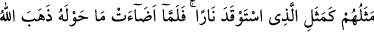
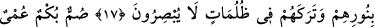
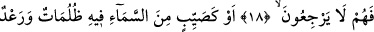
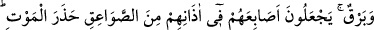
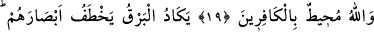
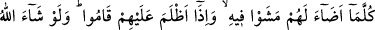
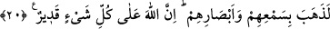

MÜNÂFIKLARIN DURUMU
17. Onların (münâfıkların) durumu, (karanlık gecede) bir ateş yakan kimse
misâlidir. O ateş yanıp da etrafını aydınlattığı anda Allah, hemen onların aydınlığını
giderir ve onları karanlıklar içinde bırakır; (artık hiçbir şeyi) görmezler.
18. Onlar sağırlar, dilsizler ve körlerdir. Bu sebeble onlar geri dönemezler.
19. Yahut (onların durumu), gökten sağnak hâlinde boşanan, içinde yoğun
karanlıklar, gürültü ve yıldırımlar bulunan yağmur(a tutulmuş kimselerin durumu)
gibidir. O münâfıklar yıldırımlardan gelecek ölüm korkusuyla parmaklarını
kulaklarına tıkarlar. Halbuki Allah, kâfirleri çepeçevre kuşatmıştır.
20. (O esnâda) şimşek sanki gözlerini çıkaracakmış gibi çakar, onlar için etrafı
aydınlatınca orada birazcık yürürler, karanlık üzerlerine çökünce de oldukları
yerde kalırlar. Allah dileseydi elbette onların kulaklarını sağır, gözlerini kör ederdi.
Allah şüphesiz her şeye kadirdir.
“Mesel”; nazîr, yâni benzer mânâsındadır. Halk arasında ilk söylendiği zamanki
şekliyle değişmeden dönüp dolaşan sözlere isim olarak kullanılmıştır. Sadece
içerisinde garâbet ve taaccübe şayan nükteler bulunan sözlere “darb-ı mesel” denilir.
Darb-ı mesellerde pek değişme olmaz. Mesel bilâhare istiâre yoluyla, içerisinde
acâiblik ve gariblik bulunan kıssa, hâl ve sıfat anlamında kullanılmıştır. Allah Teâlâ’nın
“Takvâ sâhiblerine va’dolunan cennetin özelliği (şudur)...” (er-Ra’d, 13/35) ve “En
yüce sıfatlar Allah’a âiddir.” (en-Nahl, 16/60) âyetlerindeki “mesel” kelimesi
“içerisinde azamet ve yücelik bulunan sıfat” mânâsını taşımaktadır.
Allah Teâlâ münâfıkların gerçek durumlarını anlattıktan sonra, konuyu daha açık bir
tarzda ifâde etmek ve muhatabların zihinlerine iyice yerleştirmek için bir örnekle
pekiştirmiştir. Çünkü örneklendirerek anlatmak; kişilerin meseleyi kolayca anlamasını